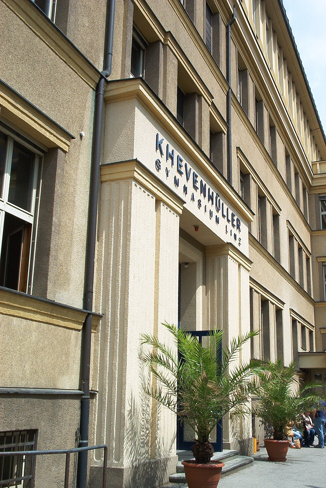

Hauptstadt: Madrid
Einwohner: 48,6 Mio
Fläche: 500 000 km²
Wie nennt man einen Spanier ohne Auto?
Carlos!
Das Khevi im Bild

„Khevenhüller Gymnasium Linz“ von Dieter Vormayr
Quelle: https://commons.wikimedia.org/w/index.php?search=Khevenh%C3%BCller+Gymnasium&title=Special%3AMediaSearch&type=image
CC BY 3.0 Lizenz